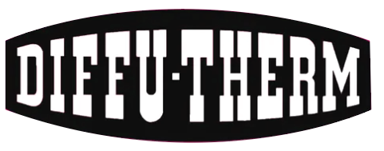

Xuất xứ: Herten, Đức
Diffu-Therm là thương hiệu vật tư kiểm tra không phá hủy của Helmut Klumpf Technische Chemie KG (Herten, Đức) — nhà sản xuất đứng sau phương pháp thẩm thấu màu đỏ/trắng lâu đời nhất của Đức. Danh mục gồm chất thẩm thấu PT, thuốc hiện hình, dung dịch tẩy rửa, bột từ và huyền phù từ cho MT, hệ UV huỳnh quang, và hệ System C làm việc tới 200 °C.
Fast Group là nhà phân phối hàng chính hãng Diffu-Therm tại Việt Nam. Chúng tôi làm việc trực tiếp với nguồn cung để bảo đảm đúng hãng, đúng lô sản xuất, kèm SDS/manual và bộ chứng từ CO/CQ. Với vật tư NDT, đây không phải chi tiết phụ: thiếu SDS hoặc sai mã trong hồ sơ là đủ để dừng một đợt nghiệm thu.
Tra cứu thêm catalog Diffu-Therm: diffu-therm-viet-nam
Diffu-Therm không bắt đầu như một thương hiệu hóa chất thông thường. Phương pháp thẩm thấu mang tên này được phát triển tại nhà máy động cơ và máy bay Junkers ở Dessau, và được cấp bằng sáng chế Đức năm 1943 (DRP 895.839) với tác giả là Helmut Klumpf. Một phiên bản cải tiến tiếp tục được cấp bằng năm 1958 (DBP 1.207.663). Từ năm 1950, công ty sản xuất độc lập tại Herten và ngày nay Diffu-Therm được biết đến như hệ kiểm tra thẩm thấu đỏ/trắng lâu đời nhất của Đức.
Điều đó có ý nghĩa thực tế với người làm QA/QC: đây là một nhà sản xuất chuyên một việc trong hơn bảy thập kỷ, và danh mục được thiết kế thành hệ đồng bộ — chất thẩm thấu, thuốc hiện hình và dung dịch tẩy rửa của cùng một hệ được thử nghiệm để làm việc cùng nhau. Đây là lý do các quy trình NDT nghiêm túc không khuyến khích ghép vật tư của hai hãng khác nhau trong cùng một lượt kiểm tra.
Thành lập năm 2019, Fast Group là nhà phân phối thiết bị và vật tư công nghiệp chính hãng tại Việt Nam. Điều tạo nên khác biệt không nằm ở danh mục — mà ở quan hệ làm việc trực tiếp với nguồn cung: chúng tôi chủ động được về tính chính hãng, giá, thời gian giao và bộ chứng từ đi kèm từng lô hàng.
Với vật tư NDT, phần chứng từ thường là chỗ dự án vấp phải. Một lô hóa chất về đúng hạn nhưng thiếu SDS bản tiếng Anh, hoặc CO/CQ không khớp số lô, là đủ để hồ sơ nghiệm thu phải làm lại. Vì vậy quy trình của chúng tôi bắt đầu từ việc xác nhận đúng mã và đúng bộ tài liệu trước khi báo giá, thay vì xử lý sau khi hàng đã về.
Trụ sở tại TP. Hồ Chí Minh, văn phòng tại Vũng Tàu — trung tâm ngành dầu khí Việt Nam — và hiện diện tại Singapore giúp chúng tôi kết nối nguồn cung quốc tế với tiến độ của nhà máy và dự án trong nước.
Fast Group vận hành một trang tra cứu riêng cho Diffu-Therm: mỗi mã hàng có trang chi tiết với quy cách đóng gói, dải nhiệt độ, tiêu chuẩn liên quan và tài liệu SDS/manual tải về được.
Gửi mã hàng, quy cách đóng gói, số lượng, phương pháp PT/MT/UV và yêu cầu SDS/manual để Fast Group kiểm tra nhanh.